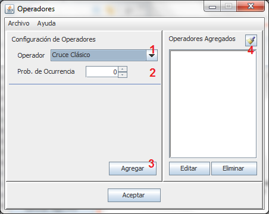

Los operadores genéticos se encargan de crear diversidad en las nuevas poblaciones.
Al pisar sobre el botón "Operadores" (Sin las comillas) se abre una ventana como la siguiente:
Cada número implica un paso en la definición de los operadores:
Definir Tipo de Operador
Definir Probabilidad de Ocurrencia
Agregar Operador
Operadores Agregados